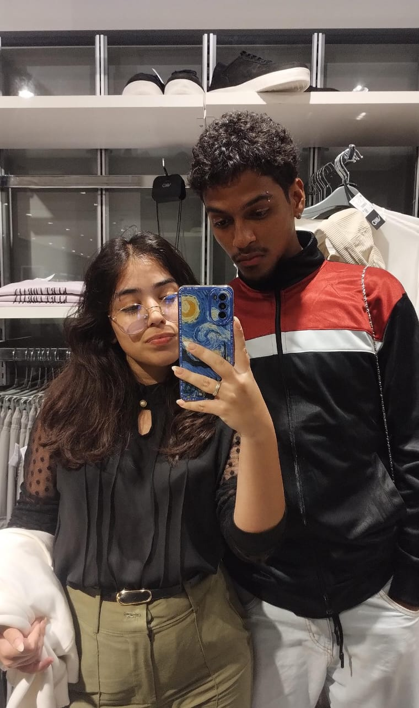

Clicka no coração parça!
"Pra sempre eu quero estar. Ao seu lado amor", uma estrofe de uma música nunca foi tão verdadeira quanto está, nunca uma estrofe falou o que estava em minha mente desde o primeiro dia que te beijei, sem dúvidas alguma nunca uma estrofe expressou o meu desejo mais profundo.

Poderia falar de todas as estrofes desta música que ditam bem todos os meus pensamentos diários, mas eu quero te parabenizar por ser uma mulher forte, extremamente linda, calma e muito esforçada. Mesmo com diversos desafios que você tem passado nos últimos dias você continua se esforçando para fazer todos que você ama feliz e isso é muito admirável, é tão bom vivenciar como você se tornou uma mulher maravilhosa. Bom, o que quero dizer é que eu te amo para sempre ❤️.
(Aproveita muito o seu dia minha vida 🫶🏾).
Com Amor,
Seu Lopinho